A Yagi Case Study
A Yagi Case StudyPart 1: Design Options
A Yagi Case Study
"This antenna is the best thing since sliced bread." Such is too often the claim made for antennas by individual builders and commercial makers alike. I'll bet those who make this and similar claims have not stopped to consider that for many meals, sliced bread is exactly the wrong bread to serve. I know a nice little restaurant that serves excellent soups in freshly baked bread bowls. I would not eat there if they tried to serve the soup in sliced bread.
So, too, with antennas. For any general application, we have options. Only when we evaluate those options against our specific requirements and our situational limitations can we decide on the best antenna for the circumstances. Notice that the result is not simply "the best antenna." It is the best antenna for the given job and the conditions under which it will have to do that job.
Since I cannot know every circumstance in which amateurs set up antennas, I cannot say what the best antenna is for any amateur activity. But I can use the space that QEX has allotted to me to discuss some options and alternatives for specific tasks. In small spaces, I cannot cover every possible option and certainly not all of the details that attach to each option. However, I can (hopefully) begin a thinking process that may ultimately let you make the best final decisions for yourself. The options that I have in mind are not brand-A vs. brand-B commercial offering. I do not have the appropriately rated test range for this kind of discussion. Instead, I shall look at options among antenna types, antenna construction, matching systems, etc. that one might face in deciding what to build for oneself.
In virtually all areas of antennas, there are facets of design and performance that we easily overlook, and many of them have an important place in our decision-making processes. To make the process even more concrete, let's look at the myriad of options that attach to a seemingly simple case study that I call "A Tale of 3 Yagis."
Yagi arrays require the antenna-builder to make three major decisions on the way from idea to reality.
These three questions ultimately rest on another: what are the uses, purposes, or goals for the antenna? How all of these questions inter-relate is part of the motivation for this set of notes.
To keep our work confined within a space that we can control, I shall examine only 2-meter Yagis. Within that space, I shall further assume that the user will take the antenna into the field for one or more of a variety of portable operations. To make matters even simpler, I shall restrict the discussion to 3-element Yagis with 30" boom lengths or less.
Even with these restrictions, we still have design choices. We may select a narrow-band, high-gain design to maximize potential for point-to-point communications. Alternatively, we may select a design with a very high 180-degree front-to-back ratio for direction finding uses. Finally, we may select a design that covers the entire 2-meter band with an exceptionally low 50-Ohm SWR. For each design, there are trade-offs that we shall examine along the way.
Once we select a design, we need to select the material for the elements. If we choose to use rod or tubing for the elements, we may simply optimize the design for the element diameter we wish to use. In fact, the design information provided in the tables will cover most common 2-meter rod and tubing sizes. However, my e-mail regularly poses questions about the use of non-standard materials, such as flat stock, L-stock, whips, and tape. Therefore, we shall spend a bit of time looking at a technique for determining what adjustments we might have to make for some of these materials. I shall provide some data that emerged from my own use of these techniques, but the techniques themselves will be your better guide to handling materials that I have not imagined.
Finally, we shall look at a few methods of overall assembly that are suitable for the element material, the overall size of the antenna, and the intended use. For such a short boom, there is no reason not to use a non-conductive boom. In most cases, the choice will be between PVC and fiberglass, with PVC being easier to find and somewhat more versatile.
In the end, these notes are just a sample of a thought process you can and should extend to other bands, other designs, and other operating purposes.
The first step in our tale of 3 Yagis is to describe the Yagis themselves. There is a high-gain, narrow-band version, a maximum-front-to-back ratio version, and a very-wide-band version. A papa bear, mama bear, and chubby baby bear analogy in these characterizations is likely not accidental.
For each antenna design, the tables will provide detailed dimensions for a variety of element diameters from 1/8" up to 1/2", in readily available rod and tube sizes. The material may be aluminum (recommended for its low weight and high strength), brass, and copper. The performance figures are based upon aluminum, although changing the material will not alter the performance in any detectable way.
The tables also provide performance data from NEC-4 models at the design frequency. All designs attempt to achieve a minimum of 20-dB 180-degree front-to-back ratio across the listed passband. However, the particular design will reveal variations in where, within the operating passband, the maximum front-to-back ratio occurs. All 3-element Yagi designs show a gradual increase in gain across the operating passband.
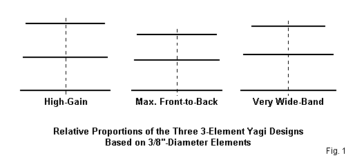
Fig. 1 shows the relative proportions of the 3 Yagi designs, using the 3/8"-diameter element versions as the basis for the sketch. The high-gain version has nearly equal spacing between elements and an almost uniform taper of the element outer tips. (The departure of the spacing and taper from uniformity is essential to achieving the performance.) The maximum 180-degree front-to-back ratio design preserves a similar driver-reflector structure, but shortens the length and spacing of the director to achieve the deep rear null. Both antennas have feedpoint impedance near 25 Ohms. The very wide-band version requires a 50-Ohm feedpoint and therefore widens the reflector-to-driver spacing. Note also the relatively short director.
1. High Gain: 144.5 MHz high gain 3-element Yagi: The high-gain Yagi is designed for maximum gain with a reasonable boom length and modest bandwidth. It will cover about 2 MHz of the 2-meter band if the design frequency is moved from 144.5 MHz to 145 MHz. However, its present design recognizes that most point-to-point activity is in the first MHz of the band. So the design frequency is set at 144.5 MHz. Within the first MHz, the SWR is less than 1.2:1 for any listed element diameter. Although horizontal operation is the norm for the low part of 2 meters, the antenna is equally operable horizontally or vertically.
We should note here that we can obtain higher gain from 3 elements with a longer boom and by setting aside the desired 20-dB front-to-back ratio. However, such designs usually also have much lower feedpoint impedances that may be difficult to match to a 50-Ohm cable without undue loss in the connections. The high-gain design used here is therefore a compromise among the many operating parameters involved in the directional antenna.
The feedpoint impedance is resonant at about 25 Ohms. This arrangement is intentional to avoid the need for excessive numbers of mechanical connections at the antenna proper. A 1/4 wavelength section of RG-83 (35-Ohm) or a parallel section of RG-59 (or similar 70-Ohm) coax will provide a match to the 50-Ohm main cable. Cut the section for 144.5 MHz, allowing for the cable's specific velocity factor. Alternatively, one may modify the design to shorten the driver so that it shows about 25 Ohms of capacitive reactance. Then, a hairpin or gamma match becomes applicable.
It is not possible to let the maximum front-to-back ratio of the high-gain, narrow-band design coincide with the design frequency for all element diameters. The smaller the element diameter, the more likely the maximum front-to-back ratio is to fall below the design frequency. However, the front-to-back ratio exceeds 22 dB from 144 to 145 MHz for all versions of the design.
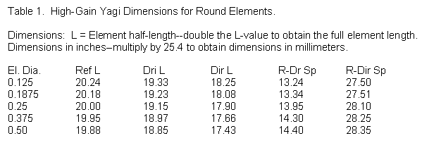
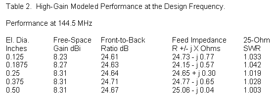
Table 1 provides dimensions for the design using round elements from 1/8" up to 1/2" in diameter. Table 2 shows the modeled free-space performance at the design frequency--144.5 MHz--for each size material. Simplified figures for the edges of the 1-MHz operating passband appear in Table 3, while Table 4 suggests the overall usable operating bandwidth with 25-Ohm SWR values at 144, 145, and 146 MHz. If the builder uses a 1/4 wavelength matching section for a 50-Ohm coaxial feedline, the 50-Ohm SWR at the junction of the matching section and the main feedline will be similar. Fig. 2 shows free-space E-plane and H-plane patterns for the array at the design frequency. These patterns replicate the pattern shapes when the antenna is used over ground in the horizontal and vertical positions, respectively.
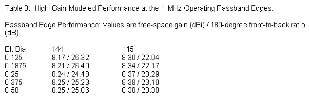
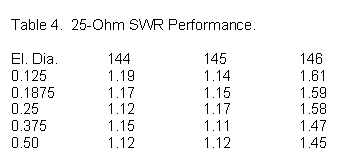
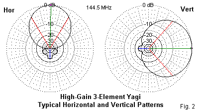
The charts show clearly that the bandwidth for any particular characteristic tends to increase with an increase in element diameter. However, note that each increase in element diameter requires a change in element spacing as well as element length to sustain the performance curves over the 144-145-MHz passband. Most of the change in element spacing occurs with respect to the driver and reflector, since this spacing, relative to a given element diameter, largely determines the feedpoint impedance of the array, once we have set the performance values with the spacing and length of the director.
To change the design frequency, scale both element lengths and element spacing. Take the ratio of the old (144.5 MHz) frequency to the new frequency and multiple all dimensions in the tables by the result. If the scaling is within the 2-meter band, no element-diameter adjustment is necessary. If the frequency ratio is greater than about 1.2:1 or less than 0.8:1, then element-diameter scaling is necessary to retain the performance characteristics.
2. Maximum Front-to-Back: 146 MHz maximum front-to-back 3-element Yagi: The applications for a high-gain design are obvious. A maximum front-to-back ratio design has more limited application, for example in the field of amateur radio direction finding. The antenna should have sufficient gain to locate the desired signal and a sufficiently sharp and deep rear null to provide a reliable bearing toward the target transmitter. Although the horizontal pattern for any parasitic beam will include rear, quartering lobes, the vertical pattern will show a clear single null. Most direction-finding activities use vertical polarization.
I have set the design frequency for the maximum front-to-back ratio at 146 MHz, because there is no absolute standard for direction-finding frequencies. However, for operation within the 2-meter band, one may scale the dimensions according to previously given principles without concern for scaling the element diameter. However, for scaling outside the limits of the 2-meter band, one should also scale the element diameter.
Although not radically finicky, the maximum front-to-back ratio for a Yagi design is a narrow-band phenomenon. Hence, one should construct the antenna for the frequency of intended use. As the performance tables will show, the front-to-back ratio decreases steadily off-frequency until the design shows no distinct null. However, the design has sufficient gain and front-to-back ratio to make it a useful performer for other purposes.
The feedpoint impedance for this design is set for about 25 - j 25 Ohms. The models all use an identical shorted transmission line stub across the feedpoint to simulate a hairpin match. Hence, the SWR curves are for 50 Ohms. The modeled feedpoint resistance is actually close to 27 Ohms, and the required inductive reactance of the hairpin is 54 Ohms. You may construct a U-shaped hairpin for the antenna by calculating the characteristic impedance for the spacing and wire diameter used. Then the length follows standard shorted-transmission line equations found in The ARRL Antenna Book, Chapter 24. A normally good construction method for the hairpin it to choose a distance between the parallel lines that is equal to the spacing between the driver terminals.
As an example, AWG #14 wire (0.0641" diameter) has a 400-Ohm characteristic impedance at a center-to-center line spacing of 0.901". A shorted stub or hairpin made from this line would need to be 1.73" long to achieve 54 Ohms inductive reactance at 146 MHz. The final adjustment requires care, since the terminal structure at the feedpoint normally introduces some reactance that may add to or subtract from the amount provided by the hairpin. Lower characteristic impedances yield longer stubs for the same reactance. Narrowing the line spacing or fattening the conductor will lower the characteristic impedance. The goal is a hairpin that is short enough to be sturdy in field use but not so short as to make the final feedpoint adjustment too finicky.
If you build this design for its intended purpose, general field adjustment also requires care. Contrary to most received wisdom, the reflector is not chief source of the front-to-back ratio in the design. The reflector is relatively insensitive and serves primarily to establish the feedpoint impedance by virtue of its length and spacing from the driver. The most sensitive element relative to establishing the ideal front-to-back ratio will be the director. The director length will be more sensitive than its spacing from the driver, although both dimensions deserve the label "sensitive."
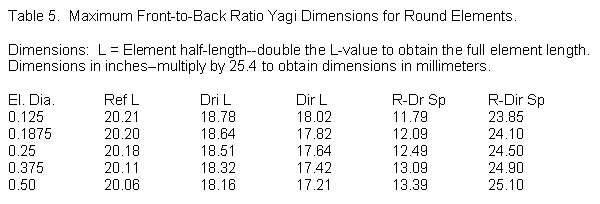 Table 5 provides dimensions and Table 6 supplies performance figures based on NEC-4 models for element sizes ranging from 1/8" to 1/2". In all of the designs in these notes, the dimension values presume a non-conductive boom or the use of mountings that insulate and isolate the elements from the influences of a conductive boom. See "Scaling and Adjusting VHF/UHF Yagis" at my web site for notes on adjusting element lengths for insulated through-boom construction (Scaling and Adjusting VHF/UHF Yagis). However, for boom lengths under 30" or so, and for direct-feed drivers, there is little reason to use a conductive boom.
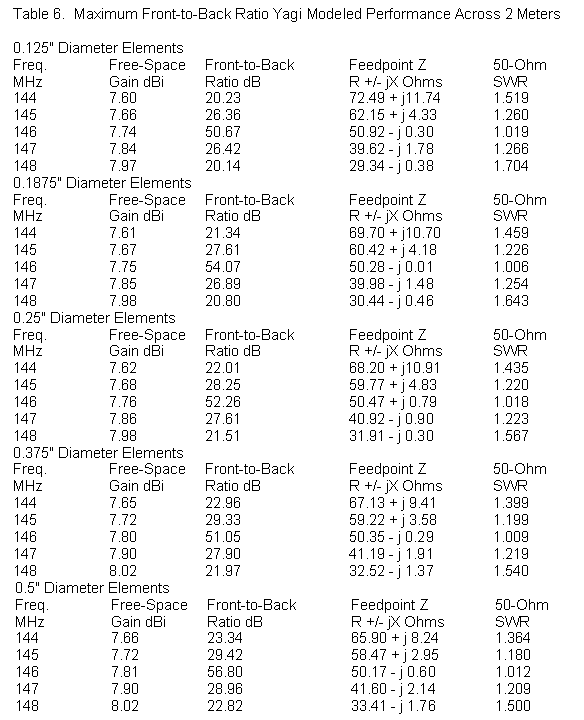
The performance figures show the increasing performance--although very gradually increasing--as we increase the element diameter and also adjust both element length and spacing to optimize performance for each new element size. This clear picture emerges largely because the design aligns the design feedpoint impedance and the maximum front-to-back ratio at the same frequency. The only performance figure for which variations make no difference is the 146-MHz front-to-back ratio: I ceased optimizing when this value exceeded 50 dB.
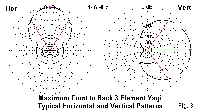
Fig. 3 shows free-space E-plane and H-plane patterns, which replicate the patterns you will obtain when using the antenna in a horizontal or vertical orientation, respectively. Over ground, expect the vertical pattern to have less gain but a wider beamwidth than the horizontal pattern. However, when used vertically, the rear quadrants will show a single deep, sharp null.
3. Very Wide-Band: 146 MHz very wide-band 3-element Yagi: The third design stresses smooth performance over the entire 2-meter band with a 50-Ohm SWR of less than 1.2:1. The design achieves this goal by using a variation of a W6SAI design from the 1980s, modified for 2 meters and for the full range of rod and tube diameters. Although the gain is about a full dB less than the high-gain model, the wide-band Yagi will provide roughly equal performance anywhere in the band. Thus, it is fit for flipping from horizontal to vertical and back again as we change to and from point-to-point and FM repeater operations.
The Yagi uses a direct 50-Ohm feedpoint with no matching network required (although common-mode current suppression measures are advisable). The need to establish the SWR curve as the primary design goal has consequences as we increase the element diameter. The front-to-back ratio shows improvement with each larger element, but the low end of the band does not quite make the 20-dB level. Very quickly in the sequence, the gain ceases to increase with increasing element diameters. Although not clearly apparent in the performance figures, both the peak gain and the peak front-to-back ratio occur at ever higher frequencies. Above the smallest element size, the peak front-to-back ratio occurs above the upper end of 2 meters.
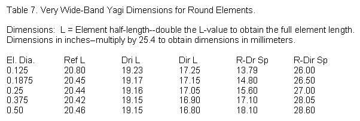
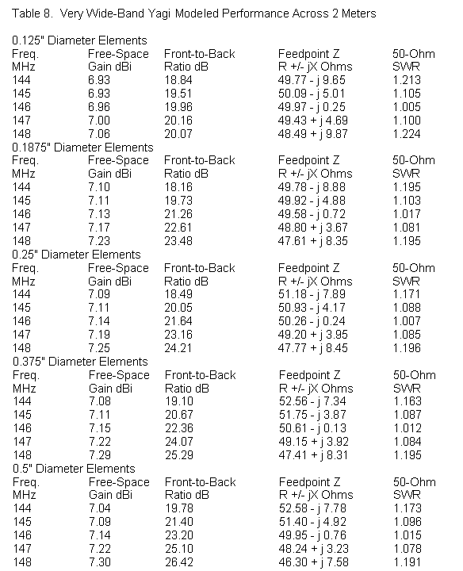
Nevertheless, the very wide-band 3-element Yagi is a true general utility antenna for use anywhere in the band. Table 7 provides the dimensions for elements ranging from 1/8" to 1/2" in diameter. Table 8 supplies the modeled performance figures. Fig. 4 gives us the shape of patterns when we use the antenna horizontally and vertically. All previous notes about scaling this antenna to other frequency bands are applicable with the very-wide-band Yagi.
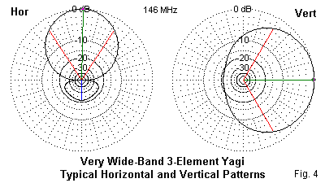
The very wide-band version of the 3-element Yagi completes the family of designs that we shall consider. Other variations may be possible, but these 3 cover the major performance parameters with which amateurs are most concerned: gain, front-to-back ratio, and operating or SWR bandwidth. One might further optimize the designs, but the level of optimizing used here gets the most out of each design that we can for each size element.
The next step--assuming that one of these designs will meet an operating need--is deciding upon the element material. Our choices are not merely the material type, for example, copper, aluminum, or brass. They also include materials other than the uniform round tubes that our initial design models have used. We shall explore some of our options next time.

Updated 01-12-2006. © L. B. Cebik, W4RNL. This item first appeared in QEX, Jul/Aug, 2004, pp. 55-59. Reproduced with permission. Copyright ARRL (2004), all rights reserved. This material originally appeared in QEX: Forum for Communications Experimenters (www.arrl.org/qex).